We will iterate over arr1 and at each index i, we aim to make the prefix arr1[0 ~
i] sorted. In case arr1[i] requires replacement with a value from arr2, the
smallest element in arr2 that will maintain increasing order is always preferred. Hence, by sorting
arr2, we can efficiently identify the smallest element that meets this criterion using binary search,
which takes logarithmic time. If arr2 is not sorted, we would have to search the entire array to find
the smallest element that meets this requirement, leading to a linear time complexity for each operation.
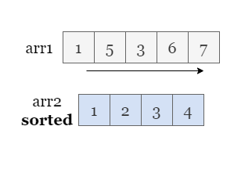
Therefore, all subsequent solutions are based on the sorted arr2.
If you are not familiar with dynamic programming, please refer to our explore cards Dynamic Programming Explore Card. We will focus on the usage in this article and not the underlying principles or implementation details.
As we update arr1 from left to right, each element arr1[i] can be subjected to several
potential operations:
arr1[i] is less than or equal to arr1[i - 1], we must replace
arr1[i] with the smallest value in arr2that is greater than arr1[i - 1],
which we can identify using binary search. Otherwise, we can't make arr1 sorted.
If arr1[i] is greater than arr1[i - 1], we have two possible options:
arr1[i]
is already greater than arr1[i - 1].
arr1[i]). We will use binary search to locate the smallest value greater than
arr1[i - 1] in arr2.
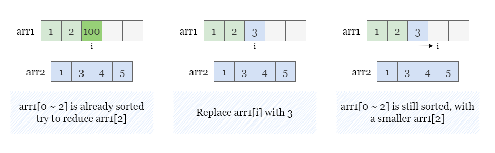
In summary:
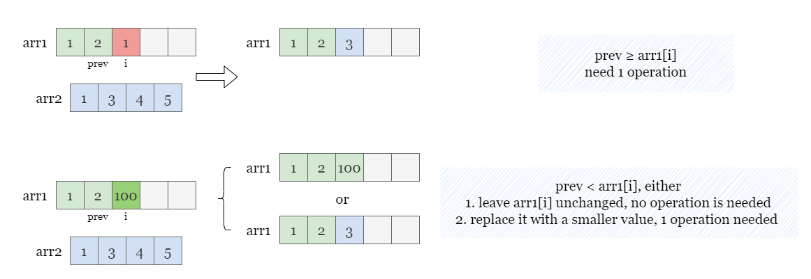
We utilize a recursive approach named dfs(i) to determine the minimum number of operations needed to
make the subarray arr1[i:] sorted. Given that we modify arr1[i] based on the value of
arr[i - 1], dfs requires an additional parameter called prev, which
represents the value of arr1[i - 1]. Hence, the complete function is defined as dfs(i,
prev).
Since there is no preceding element for the first element of arr1, we can assign an imaginary value of
-1 before arr1[0]. This allows dfs to operate on the first element with
prev = -1.
Consider the following figure, which illustrates the recursive steps of dfs(i = 0, prev = -1):
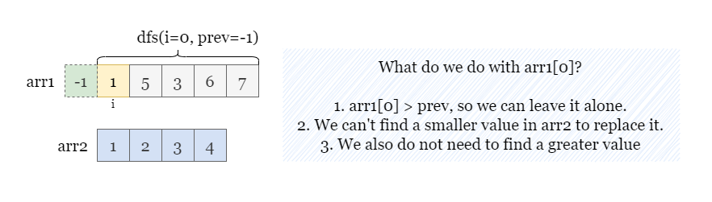
Starting from the first element of arr1, we compare arr1[0] to prev = -1.
Since arr1[0] is greater than prev, we do not need to make any changes and call
dfs recursively on the next index by passing the current value 1 as prev,
which is dfs(0, -1) = dfs(1, 1).
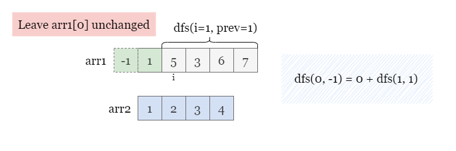
Moving on to the next element arr1[1], we compare it to prev = 1 (which is the value of the
previous element arr1[0]).
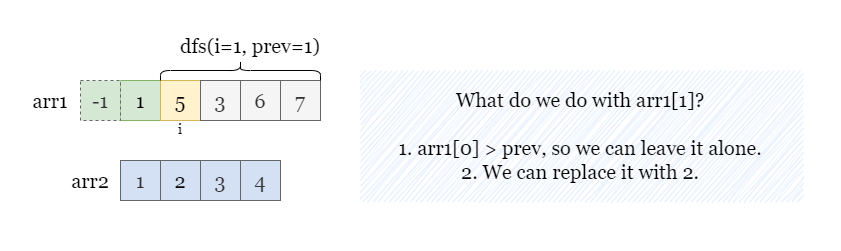
As arr1[1] = 5 is larger than prev = 1, there are two options in dfs(1, 1):
arr1[1] unchanged and continue with the next index, requiring no operation: dfs(1, 1) =
dfs(2, 5).
arr2 that is greater than prev by binary search (which is
2), since 2 is smaller than arr[1], we can replace arr1[1]
with 2, and recursively call dfs on the next index, which is dfs(1, 1) = 1 +
dfs(2, 2).
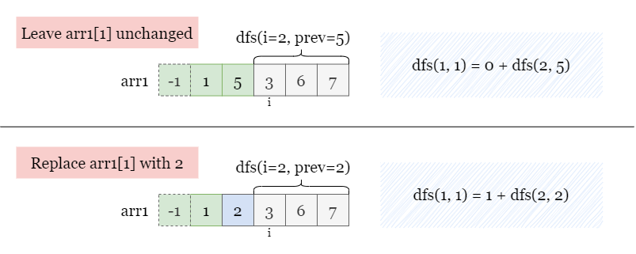
Therefore, dfs(1, 1) can be obtained by taking the minimum value between dfs(1, 1) = min(dfs(2,
5), 1 + dfs(2, 2)).
If arr1[i] cannot be replaced with any valid value in arr2 when it needs to be changed,
dfs returns a large number such as inf to indicate that it is impossible to make arr1
sorted.
We use memoization to store the minimum number of operations to reach each state (i, prev), which
improves the efficiency of the algorithm. This helps us avoid re-solving the same subproblems multiple times and
significantly reduces the time complexity.
Finally, we call dfs(0, -1) and examine the value it returns. If the value is reasonable and smaller
than the large one we assigned to impossible moves, we return the result of dfs(0, -1). Otherwise, we
return -1.
Sort arr2.
Initialize a hash map dp as memory.
Define a function dfs(i, prev) as the minimum number of operations to make arr[i:]
sorted when arr[i - 1] = prev.
Check if (i, prev) exists in dp, and if so, return dp[(i,
prev)]
Initialize cost to float('inf')
If arr1[i] > prev, set cost to dfs(i+1, arr1[i])
Find the index idx of the smallest value in arr2 that is greater than
prev using binary search. If idx < len(arr2), set cost to
min(cost, 1 + dfs(i+1, arr2[idx]))
Update dp[(i, prev)] as cost
Return cost
Return the value of dfs(0, -1) if it is not equal to float('inf'), otherwise,
return -1.
Java
class Solution {
public int makeArrayIncreasing(int[] arr1, int[] arr2) {
Arrays.sort(arr2);
int answer = dfs(0, -1, arr1, arr2);
return answer < 2_001 ? answer : -1;
}
Map, Integer> dp = new HashMap<>();
private int dfs(int i, int prev, int[] arr1, int[] arr2) {
if (i == arr1.length) {
return 0;
}
if (dp.containsKey(new Pair<>(i, prev))) {
return dp.get(new Pair<>(i, prev));
}
int cost = 2_001;
// If arr1[i] is already greater than prev, we can leave it be.
if (arr1[i] > prev) {
cost = dfs(i + 1, arr1[i], arr1, arr2);
}
// Find a replacement with the smallest value in arr2.
int idx = bisectRight(arr2, prev);
// Replace arr1[i], with a cost of 1 operation.
if (idx < arr2.length) {
cost = Math.min(cost, 1 + dfs(i + 1, arr2[idx], arr1, arr2));
}
dp.put(new Pair<>(i, prev), cost);
return cost;
}
private static int bisectRight(int[] arr, int value) {
int left = 0, right = arr.length;
while (left < right) {
int mid = (left + right) / 2;
if (arr[mid] <= value) {
left = mid + 1;
} else {
right = mid;
}
}
return left;
}
}
Python3
class Solution:
def makeArrayIncreasing(self, arr1: List[int], arr2: List[int]) -> int:
dp = {}
arr2.sort()
def dfs(i, prev):
if i == len(arr1):
return 0
if (i, prev) in dp:
return dp[(i, prev)]
cost = float('inf')
# If arr1[i] is already greater than prev, we can leave it be.
if arr1[i] > prev:
cost = dfs(i + 1, arr1[i])
# Find a replacement with the smallest value in arr2.
idx = bisect.bisect_right(arr2, prev)
# Replace arr1[i], with a cost of 1 operation.
if idx < len(arr2):
cost = min(cost, 1 + dfs(i + 1, arr2[idx]))
dp[(i, prev)] = cost
return cost
res = dfs(0, -1)
return res if res < float('inf') else -1
Let m,nm, n be the length of arr1 and
arr2.
Time complexity: O(m⋅n⋅logn)O(m \cdot n \cdot\log n)
arr2 takes O(nlogn)O(n \log n) time.
(i, prev) in a hash map dp. There are mm indices and at most n+1n + 1
possible prev as we might replace arr[i] with any value in arr2.
Each state is computed with a binary search over arr2, which takes O(logn)O(\log n).
Space complexity: O(m⋅n)O(m \cdot n)
dp is m⋅nm \cdot n.
Instead of using recursion, we can also solve this problem iteratively. We start by initializing a hash map
dp that stores each state we can reach for index i. Each state is represented as {prev:
count}, where prev is the previous value and count is the minimum number of
operations needed to reach this state.
Similar to the recursive solution, we set an imaginary value -1 before arr1[0] and add an
initial key-value pair of {-1: 0} to dp, indicating that reaching prev = -1
takes no operations.
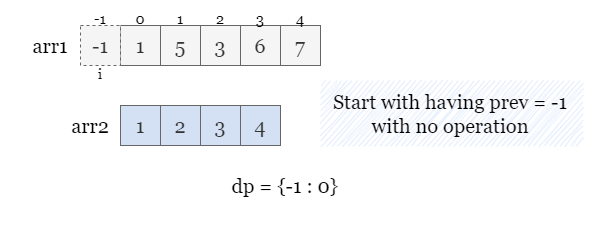
We then iterate over arr1 and for each index i, we initialize an empty dictionary new_dp
to store the states we can reach for index i.
Loop through all the states in dp and for each state {prev: count}:
If arr1[i] is less than or equal to prev, we must replace arr1[i]
with the smallest value arr2[index] in arr2 that is greater than prev,
which we can identify using binary search.
{arr2[index]: count + 1}.i.If arr1[i] is greater than prev, there are two possible options:
{arr1[i]: count} in new_dp.arr[i] with a smaller value in arr2 that is larger than
prev. Once again, we will use binary search to locate the smallest value
arr2[index] that is greater than arr1[i - 1] in arr2, create a
state {arr2[index]: count + 1}.
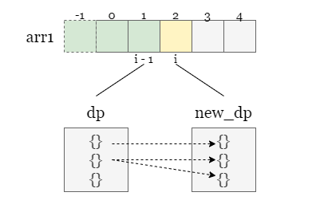
After looping through all the keys in dp, we set dp to new_dp so it represents
all reachable states at index i.
Please refer to the following example:
For i = 0, dp has one state: {-1: 0}, since arr[0] > prev, we
can leave arr[0] unchanged, thus we can reach a new state of {1: 0}, store it in new_dp.
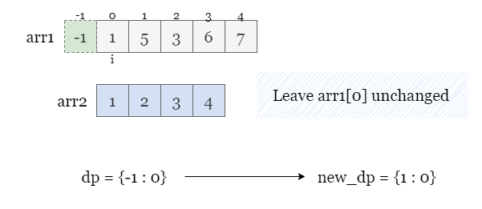
Continue with i = 1 by setting dp as new_dp and resetting new_dp.
dp has one state {1: 0}, since arr[1] > prev, we can either:
arr[1] unchanged and reach a new state {5: 0}.arr2[1] = 2 with 1 operation, and reach another new state {2: 1}.Therefore, we have created two states new_dp = {2: 1, 5: 0} for index 1.
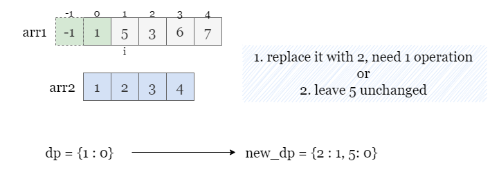
During each iteration, new_dp stores the minimum number of operations needed to reach
each state from the previous index. We can achieve this by initializing the value of each key in new_dp
to a large number like inf and updating it as the minimum value we encounter.
After iterating over arr1, we return the smallest value in dp as the minimum number of
operations required to reach the last index and make the entire arr1 sorted. If the value is
inf, it indicates that there is no way to reach any states at the last index, and we return
-1.
Sort arr2.
Create a hash map dp with an initial key-value pair of {-1: 0}.
Iterate over arr1, for each index i, create a new hash map new_dp with
default value of float('inf') and do the following:
Iterate over each key prev in dp:
arr1[i] is greater than prev, update new_dp[arr1[i]] as min(new_dp[arr1[i]],
dp[arr1[i]]).
idx of the smallest value in arr2 that is greater
than prev. If such a value exists, update new_dp[arr2[idx]] as min(new_dp[arr2[idx]],
1 + dp[prev]).
Let dp = new_dp, and repeat from step 3.
dp if it is less than float('inf'),
otherwise return -1.
Java
class Solution {
public int makeArrayIncreasing(int[] arr1, int[] arr2) {
Map dp = new HashMap<>();
Arrays.sort(arr2);
int n = arr2.length;
dp.put(-1, 0);
for (int i = 0; i < arr1.length; i++) {
Map newDp = new HashMap<>();
for (int prev : dp.keySet()) {
if (arr1[i] > prev) {
newDp.put(arr1[i], Math.min(newDp.getOrDefault(arr1[i], Integer.MAX_VALUE), dp.get(prev)));
}
int idx = bisectRight(arr2, prev);
if (idx < n) {
newDp.put(arr2[idx], Math.min(newDp.getOrDefault(arr2[idx], Integer.MAX_VALUE), 1 + dp.get(prev)));
}
}
dp = newDp;
}
int answer = Integer.MAX_VALUE;
for (int value : dp.values()) {
answer = Math.min(answer, value);
}
return answer == Integer.MAX_VALUE ? -1 : answer;
}
private static int bisectRight(int[] arr, int value) {
int left = 0, right = arr.length;
while (left < right) {
int mid = (left + right) / 2;
if (arr[mid] <= value) {
left = mid + 1;
} else {
right = mid;
}
}
return left;
}
}
Python3
class Solution:
def makeArrayIncreasing(self, arr1: List[int], arr2: List[int]) -> int:
dp = {-1: 0}
arr2.sort()
n = len(arr2)
for i in range(len(arr1)):
new_dp = collections.defaultdict(lambda: float('inf'))
for prev in dp:
if arr1[i] > prev:
new_dp[arr1[i]] = min(new_dp[arr1[i]], dp[prev])
idx = bisect.bisect_right(arr2, prev)
if idx < n:
new_dp[arr2[idx]] = min(new_dp[arr2[idx]], 1 + dp[prev])
dp = new_dp
return min(dp.values()) if dp else -1
Let m,nm, n be the length of arr1 and
arr2.
Time complexity: O(m⋅n⋅logn)O(m \cdot n \cdot\log n)
arr2 takes O(nlogn)O(n \log n) time.
dp by mm
rounds. In each round at index i, there are at most n+1n + 1
possible prev as we might replace arr[i] with any of the nn values in arr2 or
leave it unchanged. Each state is computed with a binary search over all start times, which takes O(logn)O(\log n).
Space complexity: O(n)O(n)
(i, prev) of two latest indices in dp and new_dp,
respectively. At each index, the number of possible distinct states is at most n+1n + 1.